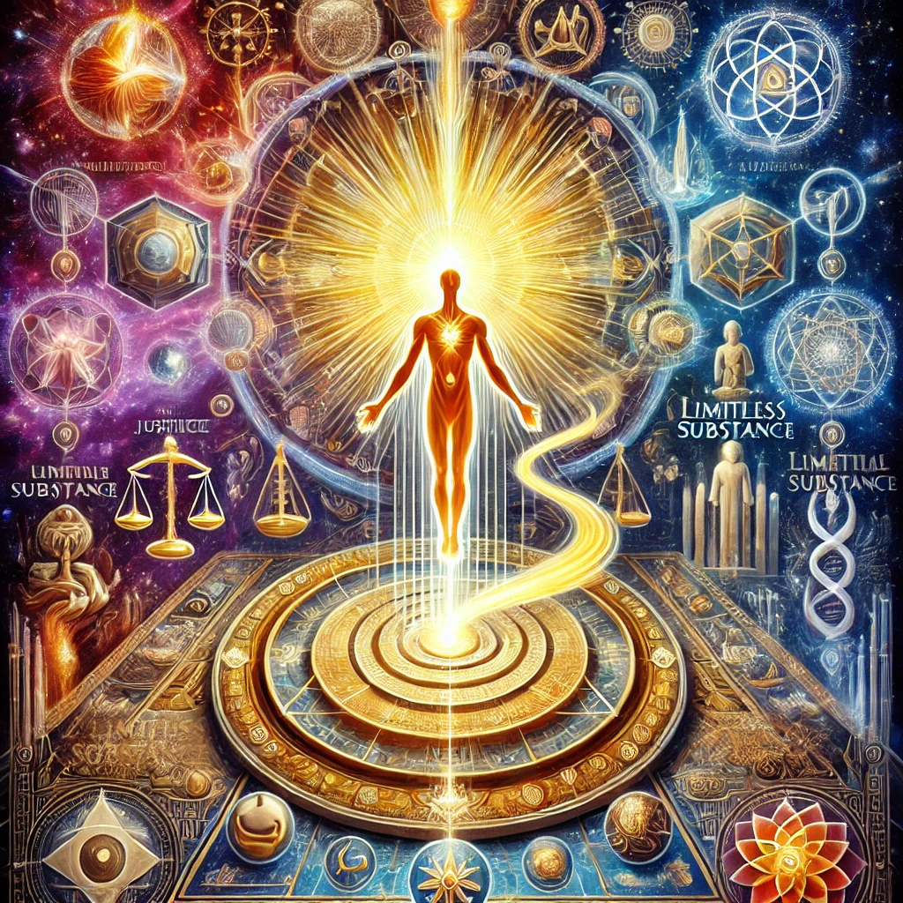
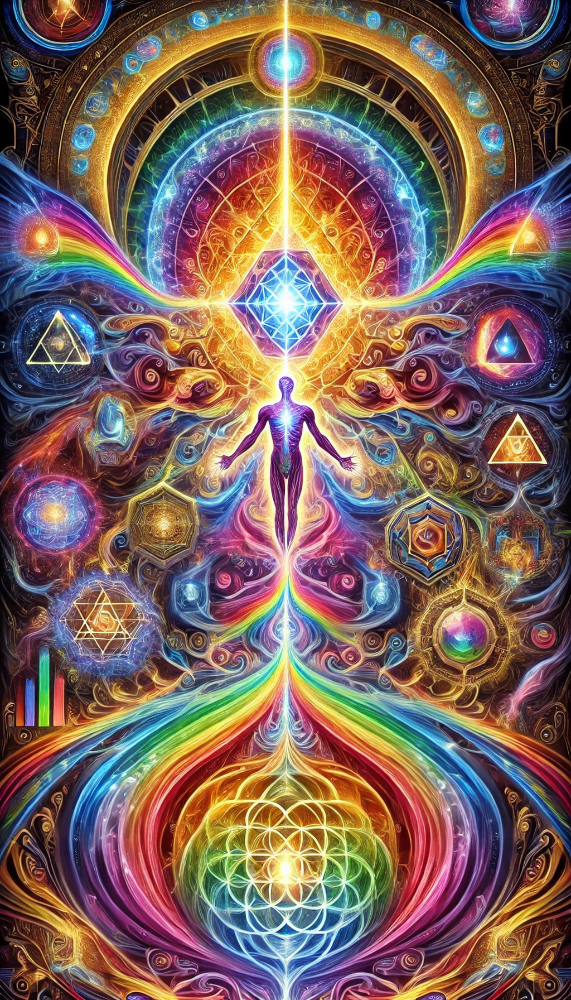

The Nag Hammadi Library: A Window into Early Christian and Gnostic Thought
Discovered in 1945 near Nag Hammadi in Upper Egypt, this remarkable collection of 13 leather-bound codices contains a total of 52 texts, primarily written in Coptic.
Scholars believe these works are translations of earlier Greek originals dating back to the 2nd and 3rd centuries AD.
These manuscripts offer unparalleled insight into the diversity of Gnostic and early Christian beliefs, cosmologies, and spiritual practices.
The texts vary in genre—gospels, apocalypses, treatises, and letters—revealing a treasure trove of perspectives on creation, salvation, and the hidden teachings of Jesus.
Their discovery revolutionized our understanding
of ancient religious thought, shedding light on how early Christians interpreted scripture, ritual, and the
pursuit of divine knowledge.

Overview and Context
The Nag Hammadi Library is often referred to simply as the Nag Hammadi texts.
Compiled between the 3rd and 4th centuries AD, the codices reveal vibrant theological debates and spiritual searches in the early Christian era.
They reflect a milieu where Greek philosophical concepts—such as Platonic and Stoic ideas—intersected with Jewish and Christian traditions.
Key Features:
- Diversity of Texts: The collection includes Gospels (e.g., the Gospel of Thomas),
Apocalypses (e.g., the Apocalypse of Paul), and Treatises (e.g., the Tripartite Tractate).
- Gnostic Perspective: Many works emphasize knowledge (gnosis) as the path to salvation,
challenging more mainstream Christian doctrines of the time.
- Coptic Translations: Although likely based on Greek originals, we have them today chiefly in Coptic,
preserving a unique linguistic snapshot.

Codices I–III: Foundational Gnostic Visions
- Codex I (The Jung Codex): Contains texts like The Prayer of the Apostle Paul, The Apocryphon of James, and The Gospel of Truth—often associated with Valentinian thought.
Themes include the role of Christ as revealer of hidden knowledge and the nature of resurrection as spiritual awakening.
- Codex II: Features the well-known Gospel of Thomas (114 sayings of Jesus
stressing inner enlightenment) and The Apocryphon of John—a key creation myth text describing the demiurge and humanity’s redemption through gnosis.
- Codex III: Includes another version of The Apocryphon of John,
The Gospel of the Egyptians (Sethian tradition), and Eugnostos the Blessed—a philosophical treatise
delving into the nature of the divine.
Codices IV–VI: Cosmology, Revelations, and Hermetic Influences
- Codex IV: Offers yet another variation of The Apocryphon of John alongside a second version of The Gospel of the Egyptians.
The slight differences across these versions highlight the fluidity of early Christian-Gnostic traditions.
- Codex V: Includes the visionary Apocalypse of Paul, two apocalypses of James, and
The Apocalypse of Adam, where Adam receives revelations on creation, the fall, and a coming savior.
- Codex VI: Notable for its Hermetic texts like The Discourse on the Eighth and Ninth and
Asclepius 21-29, reflecting an intersection of Gnostic and Hermetic thought. Also includes
The Thunder, Perfect Mind, a poetic monologue from a divine feminine perspective.
Codices VII–IX: Revelations, Hymns, and Divine Figures
- Codex VII: Contains texts such as The Paraphrase of Shem, The Second Treatise of the Great Seth, and The Apocalypse of Peter.
These works challenge mainstream views on the crucifixion and the afterlife, offering Gnostic reinterpretations.
- Codex VIII: Highlights include Zostrianos, a complex visionary apocalypse describing the soul’s ascension
through multiple realms, and The Letter of Peter to Philip, which discusses the resurrection and Gnostic teachings.
- Codex IX: Features Melchizedek, portraying him as a divine revealer, and The Thought of Norea,
focusing on a female figure in Sethian mythology.
Codices X–XI: Complex Cosmologies and Ritual Insights
- Codex X: Marsanes delves into a detailed theological and cosmological narrative
within the Sethian tradition, exploring layers of divine emanation and spiritual ascent.
- Codex XI: Includes The Interpretation of Knowledge and A Valentinian Exposition,
texts that shed light on advanced Gnostic theology and ritual practice (e.g., anointing, baptism, and Eucharist).
Also contains Allogenes, centering on revelations granted to a figure seeking divine wisdom.
Spiritual knowledge, often framed as gnosis, appears throughout these codices,
linking ritual observances
to a deeper cosmological framework designed to guide the soul back to its divine origins.
Codices XII–XIII: Hermetic Echoes, Duplication, and Final Reflections
- Codex XII: Contains The Sentences of Sextus, moral sayings blending Gnostic, Christian, and philosophical teachings, along with duplicates like a second version of The Gospel of Truth.
- Codex XIII: Notable for Trimorphic Protennoia, describing the threefold divine Thought and its roles in creation, as well as a second version of On the Origin of the World.
Conclusion:
Collectively, the Nag Hammadi Library provides an expansive look into early Christian and Gnostic cosmologies—illuminating the
interplay of dualistic worldviews, the prominence of hidden teachings, and the transformative quest for divine knowledge.
Their discovery continues to influence modern scholarship and spiritual seekers, broadening our perspective on the rich tapestry
of beliefs that shaped antiquity.